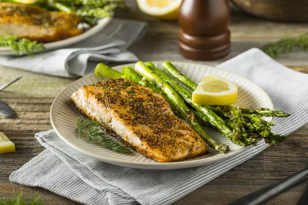
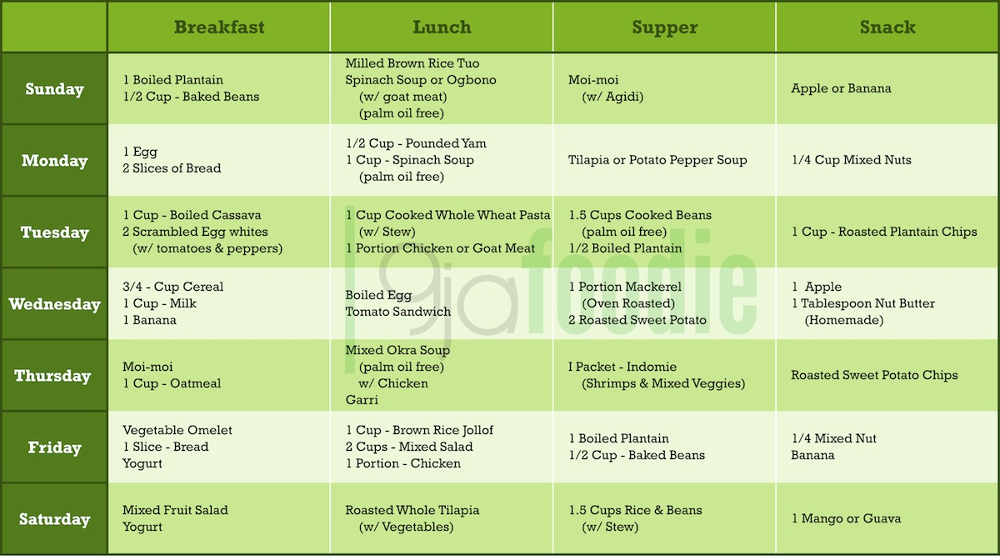
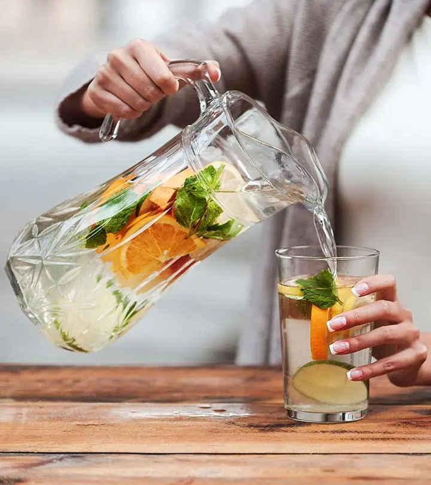
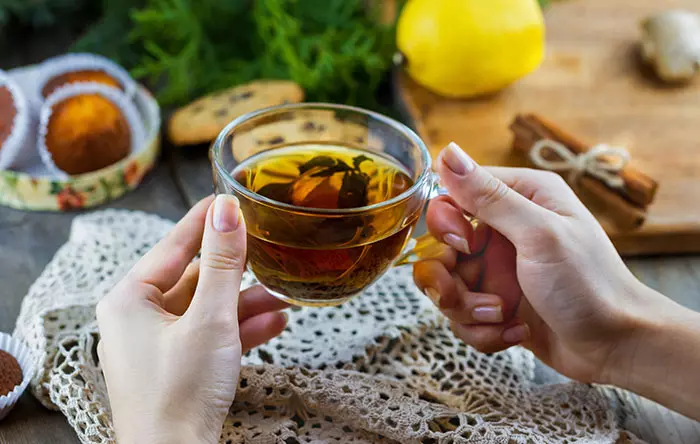
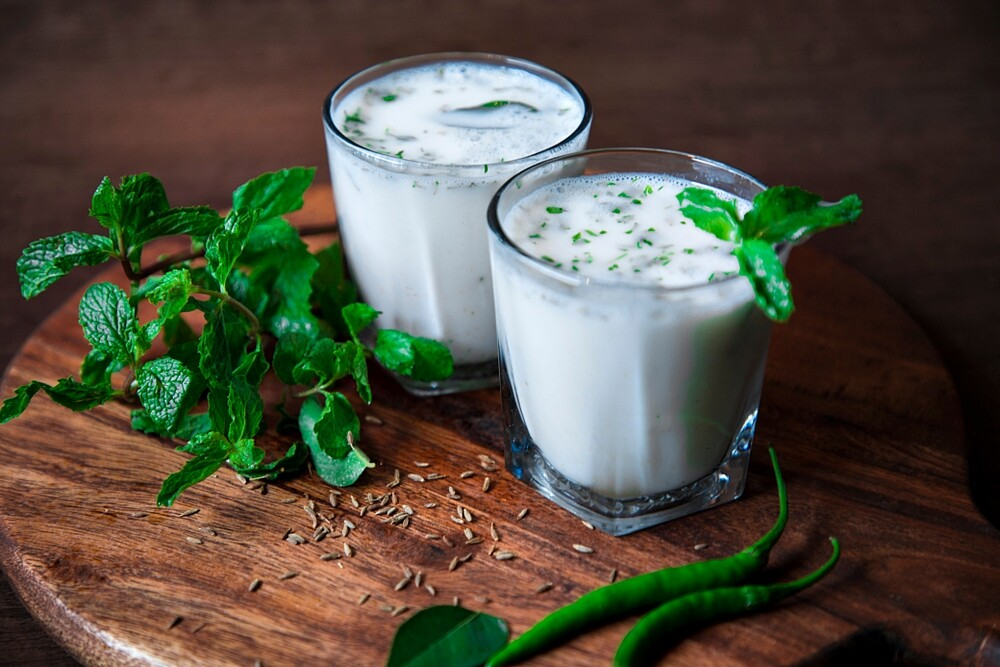

Meal Plans to Help You Lose Weight When You are overweight
Overweight is a condition wherein an individual has higher-than-average body fat.
This is not just a cosmetic problem but is also a serious medical issue. Since it increases the propensity to develop other health problems like:hypertension, diabetes, cancer, lower immunity, etc, it needs to be diagnosed and treated at the earliest by checking the BMI. The causes of overweight might be different and one major role is played by the ethnicity of the person. Thus, while coming up with a diet plan for an obese person, the availability of resources would be a factor that needs due consideration. Also know about sugar diet chart Consulting a dietician and your doctor would be important before you come up with a diet plan so that you ensure that all possible nutrients are entering your body. Following a food list and a low-fat diet would be a staple guideline. In nigeria, these foods are easily available in the markets or supermarkets and you can find different ways to cook these foods by following different recipes. Also know about sugar diet chart This chart can be used for a vegetarian or non-vegetarian diet plan for overweight

10 Easy DIY Detox Drinks For Weight Loss And Body Cleansing
Recipes and ideas to help you kick start your weight loss and internal cleansing journey.
If you need help shedding those pounds, then try detox drinks. These drinks are made of herbs, fruits, and antioxidant-rich vegetables that help flush out toxins, cleanse the gut, and boost metabolism. These, in turn, aid weight loss. Not sure how to make detox drinks at home? Check out the recipes of 10 easy DIY detox drinks for weight loss and cleansing!
- Green Tea And Lemon 
- Water
- 1 green tea bag
- 1/4 Lemon
- WaterBoil a cup of water and place a green tea bag in it.
- Add the juice of the lemon.
- 1/4 LemoDrink it while it is still hot.n
- Green tea is a good source of catechins, i.e., dietary polyphenolsi that may exhibit anti-adiposityi effects
- Lemons are known to help one lose weight because of the presence of vitamin C – which is an antioxidant that aids in digestion. Lemons are also known to have diuretic properties, which help in detoxifying the body and may potentially help burn fat
- Honey, Lemon, And Ginger
- 1/2 lemon
- 1 tablespoon honey
- 1/2 inch ginger root
- 1 glass warm water
- Heat a glass of water. Do not boil it.
- Use a mortar and pestle to crush the ginger root.
- Add the lemon juice, crushed ginger, and honey to a glass of warm water.
- Drink it while it is still warm.
- Drinking this mixture first thing in the morning may help detox the body. You also may feel less bloated and more active throughout the day. This drink also helps boost your body’s metabolism. Honey may also help suppress appetite and aid in weight loss.
- Lemon And Cucumber Detox Water
- 1 lemon
- 1 cucumber
- Mint leaves
- A pinch of salt
- Water
- Cut the lemon into wedges and slice the cucumber. Toss the pieces into the jar.
- Add a few mint leaves and a pinch of salt.
- Pour water into the jar.
- Drink this water throughout the day.
- Cucumber is a low-calorie food with high water content (95.2% water). Studies suggest that a diet low in energy density (low in calories) may help improve weight loss and manage body weight. It is one of the most common DIY cleansing drinks to boost energy and metabolism.
- Pineapple Lemonade
- 1 cup chopped pineapple
- Juice of one lemon
- 1 teaspoon maple syrup
- 1/2 teaspoon cayenne pepper
- A pinch of salt
- Toss the chopped pineapple in a blender and give it a spin.
- Pour the juice into a glass.
- Add the lemon juice, maple syrup, cayenne pepper, and salt. Stir well.
- Pineapple juice contains an enzyme called bromelain. Bromelain helps in metabolizing protein, which, in turn, may help burn away the excess belly fat. Pineapple is also a good source of fiber
- Orange And Carrot Juice
- 1 orange
- 1 carrot
- 1 tablespoon honey
- Coriander leaves
- Water
- ice
- Slice the carrot and peel the orange. Chop and toss them into the food processor.
- Add a tablespoon of honey and throw in some coriander leaves.
- Add a little water. Give it a spin.
- Add ice before drinking.
- Carrots are rich in beta-carotene and loaded with fiber. Foods high in fiber increase satiety (feeling of fullness) and decrease subsequent hunger .This may help reduce appetite, thereby leading to weight loss.
- Oranges are replete with vitamin C. Adequate vitamin C levels facilitate the burning of more fat mass. Vitamin C is inversely associated with body mass. Orange juice is low in calories and has zero fat, which makes it a good option if you are looking to lose weight. Orange also is rich in fiber.
- Beetroot And Mint Juice
- Beetroot
- A handful of mint leaves
- A pinch of salt
- Chop the beetroot into cubes and toss them in the blender.
- Add a few mint leaves and a pinch of salt.
- Drink while still fresh.
- Beets are low in calories and high in fiber . Adding fiber to your diet helps control appetite and reduce weight . It is a great cleanser for your liver. Make sure to drink the unstrained juice if you intend to lose weight.
- Strawberry And Cinnamon Detox Water
- 7-8 strawberries
- 1 cinnamon stick
- Mint leaves
- 1 liter of Water
- Cut the strawberries in half and toss them into a jar.
- Throw in some mint leaves and a cinnamon stick.
- Pour a liter of water into the jar.
- Keep it in the fridge overnight. Drink it cold to rejuvenate your body.
- Anecdotal evidence suggests that strawberries may help promote the production of the hormones adiponectin and leptin. Both these hormones may help boost metabolism and aid in weight loss.
- Strawberries contain ellagic acid, a bioactive polyphenol. Research suggests that ellagic acid may help manage obesity and related complications. However, more human clinical studies need to be conducted to prove this effect.
- Fruits And Carrot Juice
- 1 carrot
- Choice of fruits (blueberries, prunes, apples/pears, strawberries, grapes, and/or grapefruit)
- Black pepper
- A pinch of salt
- Toss the chopped carrots and fruits in the food processor.
- Add a little salt and black pepper.
- Spin it.
- Fruits and vegetables like carrots, blueberries, prunes, apples/pears, strawberries, raisins/grapes, and grapefruit are good sources of vitamins, minerals, and fiber. These fruits and vegetables may aid weight management and prevent weight gain with their high fiber content (both soluble and insoluble), low glycemic load, biologically active polyphenols, and natural sugar.
- Buttermilk Detox Drink 
- Buttermilk/plain curd
- Mint leaves
- Coriander leaves
- 1/2 carrot
- 1/2 teaspoon cumin seed powder (roasted)
- A pinch of salt
- Pour the buttermilk into a jar. You may also mix two tablespoons of plain curd, a pinch of salt, and water to make your own homemade buttermilk.
- Roughly chop a few mint leaves and coriander leaves.
- Thinly slice half a carrot.
- Blend the carrots and herbs into the buttermilk
- Add a pinch of salt and a bit of roasted cumin seed powder and stir well.
- Curd (or yogurt) is a natural source of probiotics that strengthen the digestive system. Its nutritional composition and lactic acid bacteria may improve gut health, help manage appetite, and aid weight loss. However, the role of yogurt in weight loss remains controversial
- Tomato, Leek, and Cucumber Juice
- 1 tomato
- 1 stick of leek
- 1 cucumber
- Mint leaves
- Chop the tomato, cucumber, and leek and toss them into the food processor.
- Add a few mint leaves and give it a spin.
- Tomato is a good source of lycopenei , which has the potential to aid weight loss. A study conducted by the China Medical University found that tomato juice effectively reduced waist circumference and BMI of 30 young females
What you need
How To Prepare
Benefits

What you need
How To Prepare
Benefits

What you need
How To Prepare
Benefits

What you need
How To Prepare
Benefits

What you need
How To Prepare
Benefits

What you need
How To Prepare
Benefits
.jpeg )
What you need
How To Prepare
Benefits

What you need
How To Prepare
Benefits
What you need
How To Prepare
Benefits

What you need
How To Prepare
Benefits
Foods to eat & avoid
Creating an overweight diet plan can be easy once you know what foods you can eat and what should be avoided for all-around good health. The Indian diet can be wholesome and several foods are perfect if you are looking to control or reduce your weight. Categories of food loaded with nutrition are often included in the ‘to-eat’ list. The use of Indian spices can also make a huge difference in the diet plan. Here is a list of foods that can be included in the diet for an obese person:
- Spices – The chart and diet for overweight recommends the use of spices like – turmeric, cardamom, cumin seeds, etc for their numerous benefits
- Vegetables – India is host to several veggies that are rich in antioxidants, and vitamins, high in fiber, and low in calories
- Dairy – Low-fat yogurt, curd, and buttermilk
- Legumes, pulses, and whole grains – these provide fibers and other essential nutrients
- Seeds and dried fruit – figs, dates, almonds, nuts, raisins, etc
- Beverages – unsweetened tea, coffee, lemonade, buttermilk
- Fresh fruits
Your diet for overweight chart needs to steer clear of these foods:
- Fast food – Burgers, pizzas, fries, etc
- Deep-fried foods – samosas, pakoras, chips, etc
- Sweets – mithai, pedha, gulab jamun, etc
- Processed foods
- High fat and high-carb foods
- Beverages – Sweetened beverages, alcohol, sodas, etc.
Want to make this task simple for you? You can do so by simply following this grocery list that includes several items that can make it easy for you to make your overweight diet plan.
- Whole grains – jowar, bajra, millets, ragi, quinoa, etc
- Vegetables – leafy greens, beans, cauliflower, cabbage, mushrooms, etc
- Whole fruits (not juices)
- Nuts and seeds
- Plant oil – sunflower, olive, etc
- Unsweetened beverages
- Steamed and baked snacks
- Makhana
- Popcorn without butter
- Sprouts
Other lifestyle & dietary tips
Along with the diet for overweight, certain other lifestyle tips are important to maintain so that the weight change is holistic and remains for a long time. You would want to ensure that your progress is lasting and you do not fall back to the original patterns that may end up increasing your weight. Some pro tips that can be followed as guided by experts are –
- Intermittent fasting
- Increase fiber intake
- Maintaining the healthy gut bacteria
- Manage stress well
- Avoiding late-night snacks
- Drink a lot of water
- Increase physical exercises
- Better stress management techniques
- Improved sleep cycle
- Having seasonal fruits and vegetables mushrooms, etc